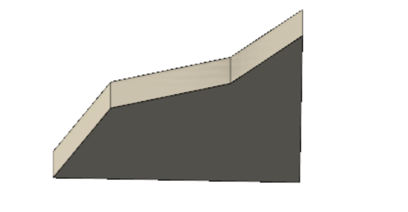

<br>
# Week 4:3D Design, Printing, Scanning
##Objectives:
Design and print a small object that could not be (easily) made by subtractive methods.
Scan something using a photogrammetry, LIDAR, or other application.
Update your website with more information about your final project.
## Week 4 was all about 3D Design, Printing and Scanning.
Last week, I discovered that I would need to cut out several components from cardboard using the laser cutter in order to assemble a shoe.So this week I decided to 3D print the shoes. 3D printing gives me the ability to print the whole shape of the shoe, including the spats. Later, I'll explain what a spat is to you. My week 4 project's theme is therefore the same as last week's, "Matching to the tone."
###Shape
The inspiration for the shape of the shoe came from my old band shoes. My band shoes were black and sharp with a smooth polished finish. We also had to wear vinyl snap spats. At first I did not like the spat because I thought it looked funny, but over time it grew on me. Below are examples of all-black band shoes on the left and on the right with spats.
I made the decision to build my 3D band shoes in Fusion 360. I designed it in Fusion 360 because I knew I could print the whole shape of the shoe, including the spats. Soo, I first sketched a funny looking shape that you can see down below.
I used the extrude feature to make the sketch look 3D.

I used the fillet feature in Fusion 360 to round the edges of the top solid part of the sketch.
I used the chamfer feature in Fusion 360 to create a beveled edge on the top of the shoes. The highlighted part down below is the part I edited.
I used the fillet feature again to round the back edges of the top solid part of the sketch. I believe it gives the back of the shoe a more smoother look.
<img src="fillet2x.png" alt="Image of fillet2x" style="width:500px;height:400px;">
Shell was the final feature I utilized. I was able to make a hole in the bottom of the shoe by utilizing shell. This hole would make it possible for me to insert something inside the shoe to provide it more support when I connect the wooden sticks, and it would use less 3D printer filament as well. The result are down below.
So after designing it in Fusion 360, I saved it as a mesh. I then used Prusa Slicer to had some support to it. The green parted is the support material. The orange part is the shoe.
I use Sense to scan this object down below.